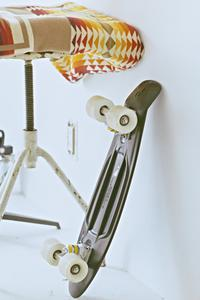

<!-- başka web sitesinden fotoğraf kaynağı alınabilir -->

<!-- bilgisayara kaydettiğin bir fotoğrafı kaynak gösterebilirsin, proje klasörün içerisinde yeni bir görseller klasörü bulundurmalısın. -->

<!-- lorem images kullanarak kaynak verebilirsin. -->,
